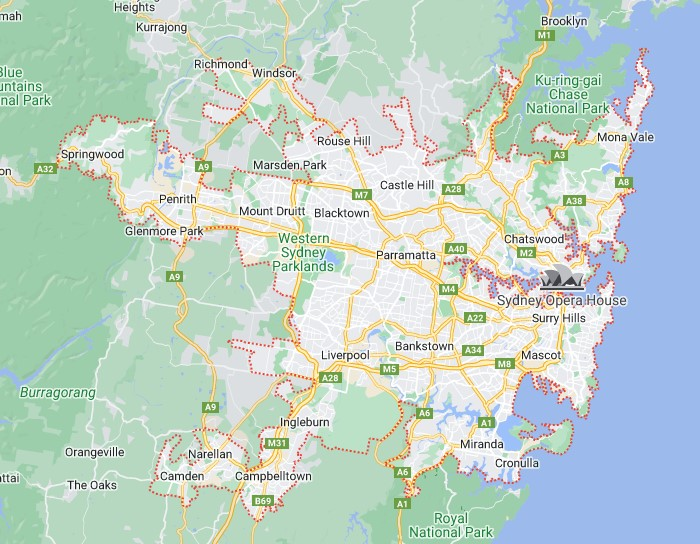

Within New South Wales i'm from Sydney
Link to New South Wales page
Link to Northern Beaches page
A few interesting points about Sydney
- Within New South Wales i'm from Sydney. Most people when they talk about Sydney they are referring to the metropolitan area.
- In terms of urban footprint Sydney is the 43rd largest city in the world.
- The city of Sydney is actually quite small and is located on the southern side of the harbour bridge.
- And of course no mention of sydney would be complete if a picture of the Sydney Opera House and the Harbour Bridge were not included.
101 interesting facts about Sydney
The following images are;
1. The Sydney metropolitan area.
2. The city of Sydney.
3. The most iconic part of Sydney, the Opera House, and Harbour Bridge.
